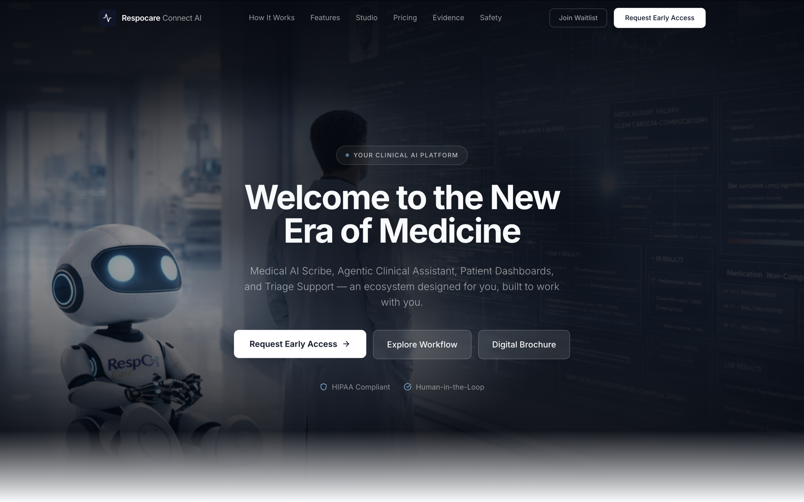
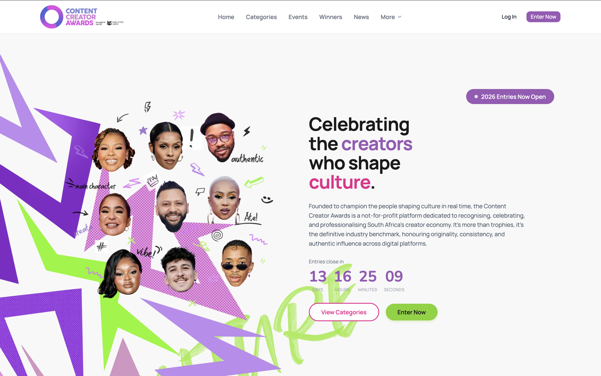
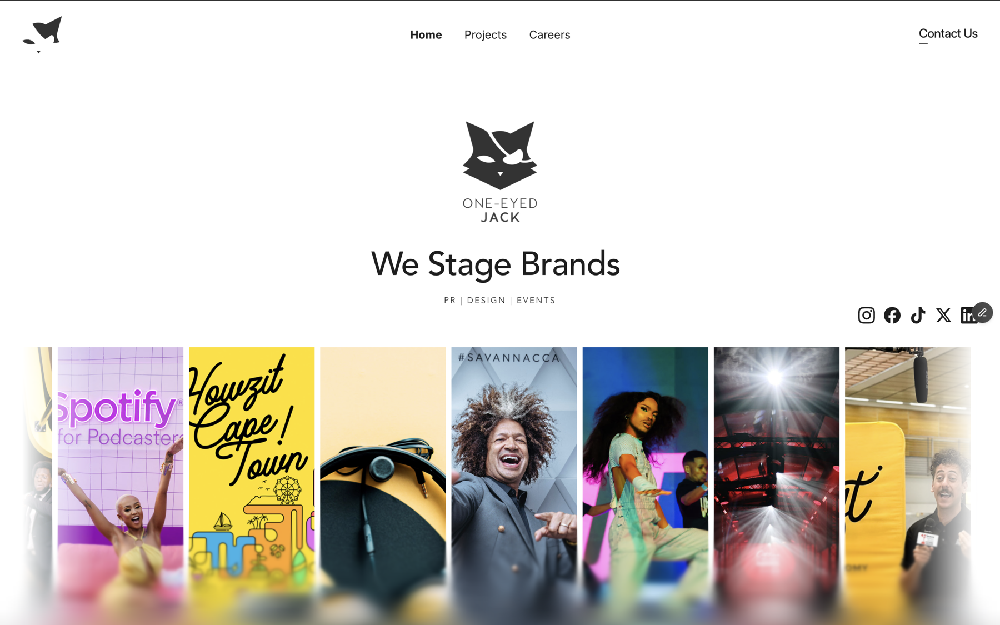

Marketing context became front-end judgement.
Usability improvements, website redesign work, valuation-tool features, and legacy code cleanup built the foundation.
Developer track
I build websites, front-end features, CRM tools, and operational systems with a focus on usability, speed, and the workflows behind the screen.



Progression
Usability improvements, website redesign work, valuation-tool features, and legacy code cleanup built the foundation.
Modern websites, client relationships, CRM software, invoices, analytics, and workflow systems built around real operations.
Working style
Understand what the business actually needs the interface to support.
Make the next action clear, responsive, and easy to repeat.
Build features that can be maintained, handed over, and improved.
Developer case studies
Healthcare AI landing experience with a premium product feel, strong trust cues, and conversion-led calls to action.
TODO: add role, stack, build notes, and final URL.Bright creator-economy site direction with expressive campaign visuals and entry-focused user journeys.
TODO: add role, CMS/build details, and launch notes.Client records, invoices, analytics, and operational workflows shaped into a working business system.
TODO: add stack, screenshots, user count, and operational impact.Problem, feature logic, interface decisions, and business value.
TODO: add feature details, before/after state, and measurable outcome.